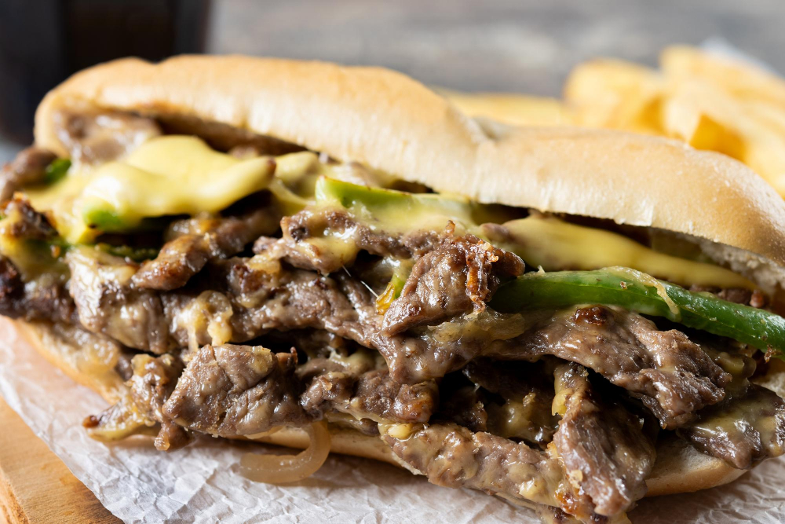

Philly Cheesesteak

This Philly cheesesteak is made with sirloin sliced into strips
and seasoned with a delicous blend of herbs and spices for a flavorsome sandwich.
Ingredients
- 1/2 teaspoon of salt
- 1/2 teaspoon of black pepper
- 1/2 teaspoon of paprika
- 1/2teaspoon of chili powder
- 1/2 teaspoon of onion powder
- 1/2 teaspoon of garlic powder
- 1/2 teaspoon of dried thyme
- 1/2 teaspoon of dried marjoram
- 1/2 teaspoon of dried basil
- 1 pound of beef sirloin, cut into 2 inch strips
- 3 tablespoons of vegetable oil
- 2 onions, sliced
- 1 green bell pepper, julienned
- 3 ounces of swiss cheese, thinly sliced
- 4 rolls, split lengthwise
How to Prepare
- Mix salt, pepper, paprika, chili powder, onion powder, garlic powder, thyme,
marjoram, and basil together in a small bowl.
- Place your steak in a large bowl; sprinkle seasoning mixture over the top and stir to coat.
- Heat 1/2 of the oil in a skillet over medium-high heat. Add the steak in batches
if needed to avoid overcrowding the skillet; cook until browned and just cooked through.
Transfer your cooked steak onto a plate.
- Heat the remaining oil in the skillet. Add onion and green pepper; cook and stir until tender and caramelized.
- Preheat your oven on the broiler setting. Divide the cooked beef between the bottoms of 4 rolls.
- Layer with onion and green pepper.
- Top with sliced cheese. Place on grease-proof paper.
- Broil in the preheated oven until the cheese melts.
- Cover with the tops of your rolls, serve and enjoy!